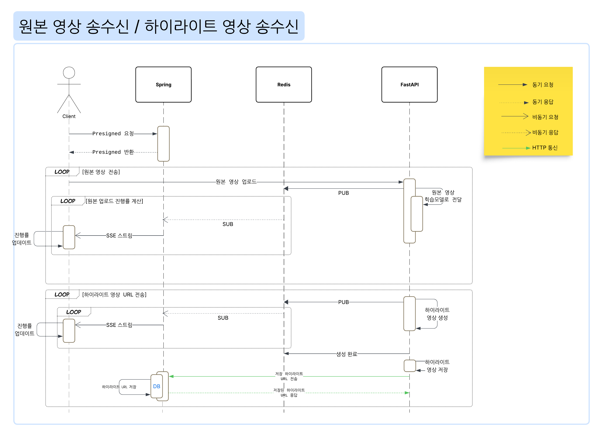
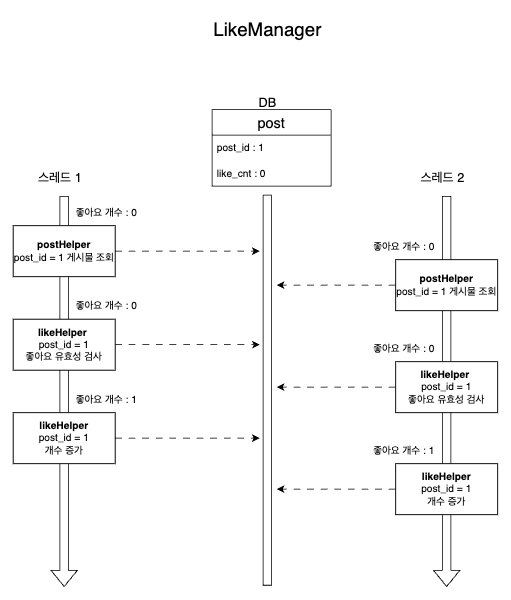
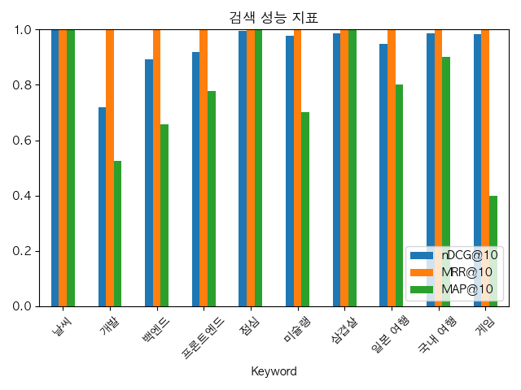
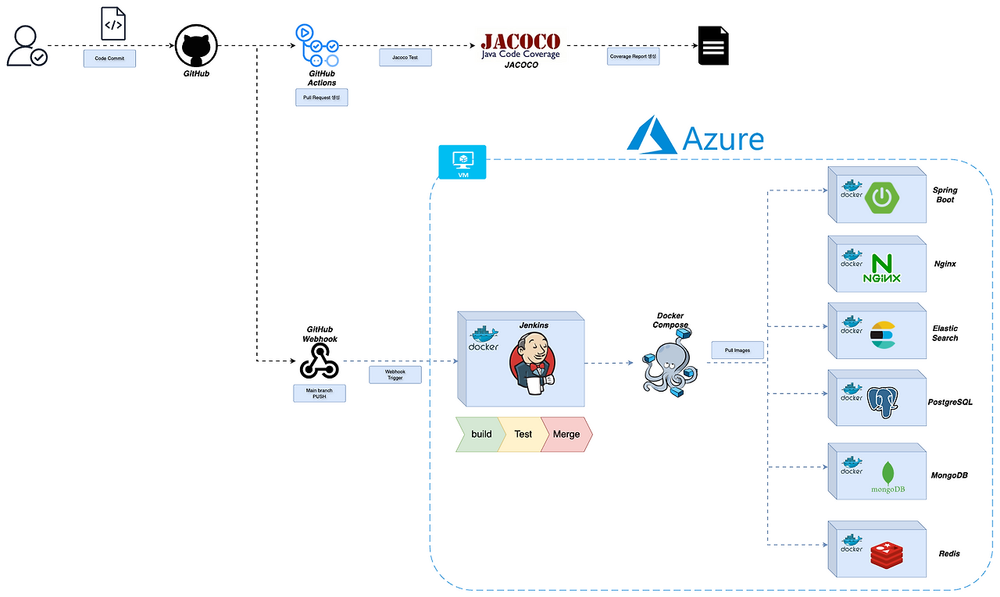

ShootPointer는 농구 영상을 업로드하면 개인 하이라이트를 생성하고, 생성된 결과를 커뮤니티 게시글과 랭킹으로 연결하는 서비스.
Team Leader & Backend Engineer — 전체 기여도 40%. 기획부터 OpenCV 파이프라인 개발, 프로젝트 전체 아키텍처 구성까지 전 영역을 주도했습니다.

ShootPointer는 농구 영상을 올리면 개인 하이라이트를 생성하고, 그 결과를 게시글·검색·랭킹까지 연결하는 서비스였습니다. 핵심은 영상 분석 자체보다, OpenCV 서버와 백엔드가 역할을 분리해 안전하게 협업하는 구조를 만드는 것이었습니다.
영상 업로드를 바로 OpenCV 서버로 보내는 구조에서는, 누가 어떤 권한으로 업로드하는지와 작업 ID를 어떻게 추적할지, 그리고 진행률 구독과 결과 조회를 job 단위로 어떻게 연결할지가 중요했습니다.
/api/progress/subscribe SSE로
클라이언트에 중계
↗ PR #202
↗ PR #245
/api/highlight/latest 흐름을 분리
↗ PR #242
↗ PR #244

게시판 기능에서 좋아요 수를 Post 테이블에서 직접 관리하고 있었기 때문에, 다수 사용자가 동시에 요청을 보내면 좋아요 개수 정합성이 깨질 가능성이 있었습니다. 실제로 10,000건 동시 요청 테스트에서 기대값 10,000이 아니라 1,528만 반영되는 문제가 드러났습니다.

기존 검색은 제목·본문에 대한 SQL LIKE 기반 검색 후 최신순으로 정렬하는 구조였습니다. 이 방식은 검색 정확도 중심 정렬이 어렵고, 자동완성이나 검색 랭킹 같은 기능 확장에도 한계가 있었습니다.

ShootPointer는 Jenkins + GitHub Actions + Webhook 기반 CI/CD를 운영 중이었고, Docker Compose 멀티 컨테이너 아키텍처로 배포하고 있었습니다. 그런데 배포마다 최소 5~6분, 최대 8~9분의 다운타임이 발생해 팀 테스트 흐름을 자주 막고 있었습니다.